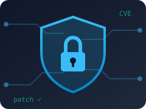
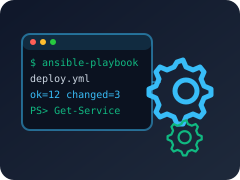

Qu'est-ce que la veille technologique ?
Collecter, trier et analyser l'information technique pour suivre les évolutions et les menaces de mon domaine. Elle répond à la compétence C6 — Organiser son développement professionnel.
Mes 2 thématiques
👆 Cliquez sur une thématique ou sur un sujet pour afficher les articles.

Cybersécurité des systèmes d'exploitation
Les failles qui touchent Windows, Linux et le réseau, et comment l'administrateur protège son parc.
- Windows 10 : fin de la 1ʳᵉ année d'ESU
- Patch Tuesday record : 966 failles corrigées
- Un été 2026 record pour les rançongiciels
- « Dirty Frag » : élévation de privilèges sous Linux
- WSUS : faille critique exploitée
- Pare-feu Cisco ASA : deux zero-day

Automatisation de l'administration système
Les outils qui automatisent le déploiement, les mises à jour et la supervision.
- Ansible s'ouvre aux agents IA
- Grafana 13 et l'observabilité ouverte
- PowerShell 7.6 LTS
- Sysmon intégré à Windows

Windows 10 : fin de la 1ʳᵉ année d'ESU
Source Microsoft Learn · Documentation officielle Microsoft
Le support de Windows 10 a pris fin le 14 octobre 2025. La 1ʳᵉ année de mises à jour étendues (ESU), payante par poste, s'arrête le 13 octobre 2026.
Pour l'admin : recenser les postes Windows 10 (inventaire type OCS Inventory) et planifier la migration.
Lire l'article sur Microsoft Learn ↗Patch Tuesday record : 966 failles corrigées
Source BleepingComputer · Média spécialisé cybersécurité
Le 8 septembre 2026, Microsoft a corrigé 966 failles, dont 105 critiques et 2 « zero-day » donnant les droits SYSTEM.
Pour l'admin : prioriser les failles activement exploitées.
Lire l'article sur BleepingComputer ↗
Un été 2026 record pour les rançongiciels
Source LeMagIT · Média IT professionnel
Plus de 920 attaques par rançongiciel par mois en juillet et août 2026. Qilin est le groupe le plus actif.
Pour l'admin : patcher VPN et pare-feu, sauvegardes hors ligne testées.
Lire l'article sur LeMagIT ↗« Dirty Frag » : élévation de privilèges sous Linux
Source CERT-FR (ANSSI) · Alerte officielle du gouvernement
Deux failles du noyau Linux (CVE-2026-43284 et CVE-2026-43500) permettent à un utilisateur local de devenir administrateur. Un exploit est public.
Pour l'admin : mettre à jour le noyau (apt upgrade + redémarrage), comme pour ma réalisation Debian 12.
WSUS : faille critique exploitée
Source IT-Connect · Site d'administration système
La faille CVE-2025-59287 (CVSS 9,8) permettait d'exécuter du code à distance sur WSUS sans authentification. Correctif d'urgence le 23 octobre 2025.
Pour l'admin : ne jamais exposer WSUS sur Internet (ports 8530/8531).
Lire l'article sur IT-Connect ↗
Pare-feu Cisco ASA : deux zero-day
Source BleepingComputer · Média spécialisé cybersécurité
Deux failles des pare-feu Cisco ASA, déjà exploitées, permettaient de contourner l'authentification VPN puis d'exécuter du code.
Pour l'admin : suivre de près les alertes des équipements de bordure.
Lire l'article sur BleepingComputer ↗Ansible s'ouvre aux agents IA
Source Le Monde Informatique · Média IT professionnel
Red Hat a lancé un serveur MCP pour Ansible : des agents IA peuvent lancer des playbooks déjà écrits et validés par des humains.
Pour l'admin : l'IA s'appuie sur les procédures de l'admin, elle ne les remplace pas.
Lire l'article sur Le Monde Informatique ↗Grafana 13 et l'observabilité ouverte
Source Grafana Labs · Communiqué officiel de l'éditeur
Grafana 13 apporte des tableaux de bord dynamiques versionnés dans Git et un Loki jusqu'à 10 fois plus rapide.
Pour l'admin : détecter un problème avant l'utilisateur.
Lire l'article sur Grafana Labs ↗PowerShell 7.6 LTS
Source Blog PowerShell · Blog officiel Microsoft
Sortie le 18 mars 2026, la 7.6 est la nouvelle version à support long (LTS), basée sur .NET 10, avec PSResourceGet.
Pour l'admin : viser la LTS pour les scripts de production.
Lire l'article sur Blog PowerShell ↗Sysmon intégré à Windows
Source IT-Connect · Site d'administration système
Annoncé à Ignite 2025 : Sysmon devient une fonctionnalité optionnelle de Windows 11 et Windows Server 2025.
Pour l'admin : collecte de journaux facilitée pour détecter une intrusion.
Lire l'article sur IT-Connect ↗Ce que je retiens en 2026
L'IA est des deux côtés : pour trouver des failles, pour attaquer et pour automatiser. Les fondamentaux restent : connaître son parc, patcher en priorisant, sauvegarder, superviser.
Ma méthode
Collecter
Alertes, bulletins CERT-FR, IT-Connect, LinkedIn.
Trier
Je garde ce qui touche Windows, Linux et le réseau.
Vérifier
Je recoupe avec une source officielle (CERT-FR, CVE, éditeur).
Synthétiser
Je résume l'impact pour un administrateur.